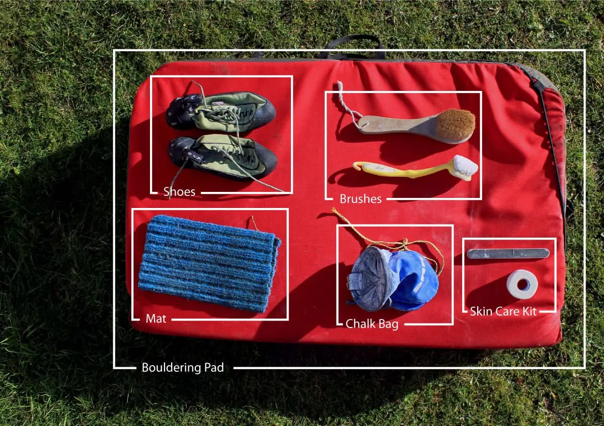

Pro bezpečný a efektivní bouldering je potřeba několik základních pomůcek. Nejdůležitější jsou kvalitní lezečky, které zajišťují dobrou přilnavost a stabilitu nohou.
Dalším klíčovým vybavením jsou magnéziové pytlíky a magnézium, které pomáhají udržet ruce suché a pevný úchop. Důležité jsou také dopadové žíněnky (bouldermaty), které chrání při pádech a umožňují bezpečné přistání.
Pro trénink doma se hodí fingerboardy, campus boardy a další pomůcky pro posílení prstů a prstových úchopů. Důležitá je také pohodlná a funkční sportovní oděv, který neomezuje pohyb a podporuje flexibilitu.
Neméně důležitou součástí vybavení jsou štětce, kterými se čistí chyty a lišty. Pravidelné čištění zajišťuje lepší tření a bezpečnější úchop, zejména na prašném nebo mastném povrchu.
Péče o prsty je dalším aspektem, který by žádný lezec neměl podceňovat. Po tréninku nebo lezení je vhodné prsty protáhnout, masírovat a případně použít regenerační krémy nebo balzámy, aby se předešlo zraněním, ztuhlosti nebo odřeninám. Pravidelná péče prodlužuje životnost prstů a zlepšuje výkon.
